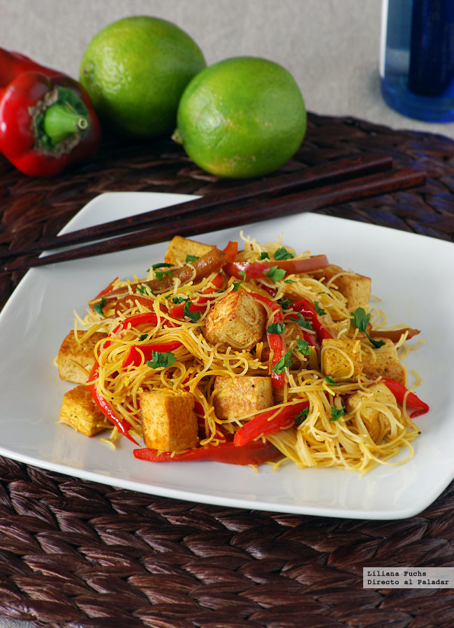

Receta 1
Fideos de arroz con salteado de tofu y pimiento

Receta 2
Ensalada de quinoa, calabaza asada y granada
Receta 3
Tortilla de patatas vegana
Las recetas mayormente suelen tener la misma sintaxis; una lista de ingredientes y la cantidad de los mismos, y a continuación describir paso por paso la forma en que se prepara el platillo, así como el tiempo y los utencilios necesarios para la misma. Esta página va a profundizar en todo sobre las recetas, bienvenidos.
Información
Comer siempre fue y será una necesidad básica pues es algo que literalmente nos puede matar, así que no seía una locura decir que las primeras recetas fueron transmitidas de boca en boca cuando no eran venenosas ni significaban un gran sacrificio, como simplemente poner al fuego la carne.
Información


Aprende mas sobre recetas en mi canal de youtube, completamente gratis.
InformaciónLa Real Academia Española (RAE) define un alimento afrodisíaco como aquel capaz de excitar o estimular el deseo sexual. Es por ello que cualquier alimento o bebida que se consuma con dicho propósito podría considerarse un alimento afrodisíaco.
InformaciónEspárragos: fuente de potasio, fibra, vitaminas del grupo B como el ácido fólico, vitamina C y vitamina A; además estimula la liberación de histamina que interviene en alcanzar el orgasmo. Granada: las semillas de granada favorecen el flujo sanguíneo, aumentando la sensibilidad, también de zonas genitales. Sandía: contiene una sustancia llamada citrulina que es capaz de aumentar el óxido nítrico, vasodilatador que mejora la circulación sanguínea, lo que puede incrementar la excitación. Zanahorias: contienen vitamina A, necesaria para la producción de hormonas sexuales, y que en los hombres protege las células del aparato reproductor del envejecimiento prematuro. Plátano: contiene bromelina, una enzima que provoca la producción de testosterona. Fresas: estimula las glándulas endocrinas y el sistema nervioso. Combinadas con chocolate se consideran una de las asociaciones más eróticas. Chocolate: las semillas de cacao contienen fenilalanina y teobromina, sustancias que ayudan a disminuir la fatiga, mejoran la circulación sanguínea y estimulan la segregación de serotonina, neurotransmisor relacionada con la libido. Canela: estimula el riego sanguíneo, y al facilitar el flujo mejora la irrigación, también de las zonas genitales, facilitando la excitación. Higos: ricos en betacarotenos, sustancia precursora de hormonas sexuales, así como su forma, similar a los genitales femeninos.
InformaciónLegumbres, cereales, semillas, frutos secos y algas son algunos de los alimentos de origen vegetal que proporcionan buenas fuentes de proteínas. Aunque muchos de estos productos no son proteínas "completas", es decir, no contienen todos los aminoácidos, una dieta variada que combine diferentes grupos de alimentos sí nos proporcionará todos los nutrientes necesarios, como bien explica la dietista-nutricionista Lucía Martínez. Además, la soja o la quinoa sí son fuentes completas de aminoácidos.
Fideos de arroz con salteado de tofu y pimiento
Ensalada de quinoa, calabaza asada y granada
Tortilla de patatas vegana